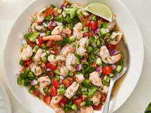

Ceviche

Description
Shrimp ceviche is a refreshing, zesty dish made with succulent shrimp
marinated in freshly squeezed lime juice, mixed with diced tomatoes, onions,
cilantro, and jalapeños. It’s typically served chilled, often accompanied by
tortilla chips or on tostadas, offering a burst of vibrant, tangy flavors in every bite.
Ingredients
- 1 pound (450g) shrimp, peeled, deveined, and diced
- 1 cup fresh lime juice (about 8-10 limes)
- 1 cup fresh lemon juice (about 4-5 lemons)
- 1/2 cup fresh orange juice (about 2 oranges)
- 1 cup red onion, finely diced
- 1 cup cucumber, peeled, seeded, and finely diced
- 1 cup tomato, finely diced
- 1 jalapeño, seeded and finely diced (adjust to taste)
- 1/4 cup fresh cilantro, chopped
- 1 avocado, diced
- Salt and pepper to taste
- Optional: 1-2 cloves garlic, minced
Steps
- Prepare the Shrimp: If using raw shrimp, bring a pot of salted water to a boil. Add the shrimp
and cook for about 1-2 minutes until they are just cooked through. Drain and immediately transfer
to a bowl of ice water to stop the cooking process. If using pre-cooked shrimp, this step
can be skipped.
- Marinate the Shrimp: In a large glass or ceramic bowl, combine the diced shrimp with the lime,
lemon, and orange juices. Make sure the shrimp is fully submerged in the juice. Cover and refrigerate
for about 30 minutes to 1 hour, or until the shrimp turns opaque and is fully “cooked” by the acid in
the citrus juices.
- Combine Ingredients: Drain the shrimp, discarding most of the marinating liquid but keeping about 1/4 cup for flavor.
Add the red onion, cucumber, tomato, jalapeño, and cilantro to the shrimp. Mix well to combine.
- Season and Add Avocado: Gently fold in the diced avocado. Season with salt and pepper to taste. If using garlic,
add it at this stage.
- Chill and Serve: Cover and refrigerate for an additional 15-30 minutes to let the flavors meld together. Serve chilled,
with tortilla chips, on tostadas, or with a side of your choice.